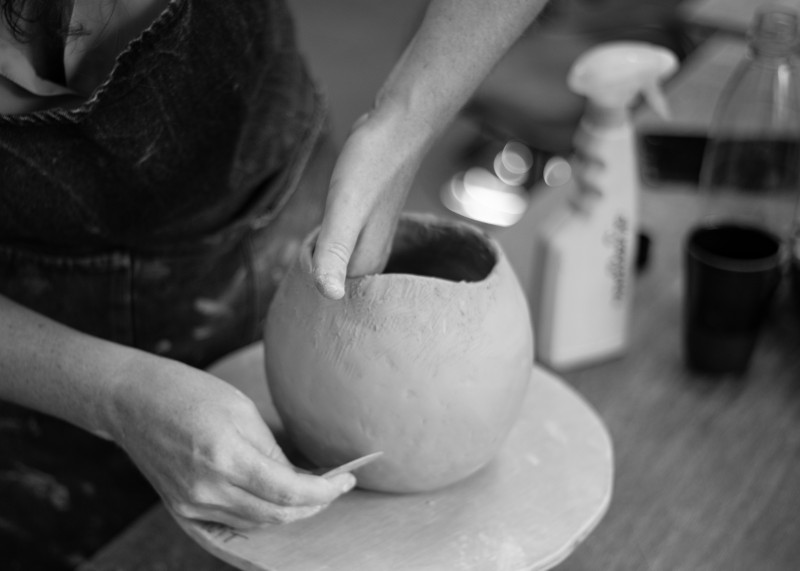
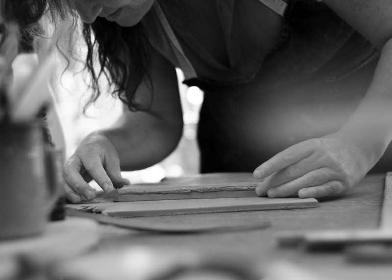

Een uniek leven in klei gekneed.
Ik ben Selien en ik creëer unieke urnen voor mens en dier. Bo Repo is ontstaan uit een behoefte aan meer verbinding: een persoonlijke, esthetische aanpak rond afscheid & sterven.

Mijn missie
Herinneringen, voor altijd dichtbij.
Mijn missie is om jouw herinneringen, verhalen en persoonlijke verzoeken zorgvuldig in klei te kneden. Volledig met de hand, zonder draaischijf of mal.
Zo geef ik met alle aandacht en warmte een passende, waardige rustplaats vorm - voor altijd, dicht bij jou.

Mijn aanbod
Hoe gaat het in zijn werk.
Er zijn verschillende opties om te komen tot de urne die bij jou past.
- Je kiest een bestaande creatie. Deze is vaak onmiddellijk leverbaar.
- Je kiest een bestaande creatie als basis en vraagt om kleine persoonlijke aanpassingen.
- We vertrekken van een blanco blad en komen gedurende een uitgebreid gesprek tot een volledig gepersonaliseerd ontwerp.
Het creëren van een urne op maat kan tot acht weken in beslag. Prijzen zijn afhankelijk van de gemaakte keuzes en de bijhorende technieken. Neem gerust contact op voor een gepersonaliseerde offerte.
